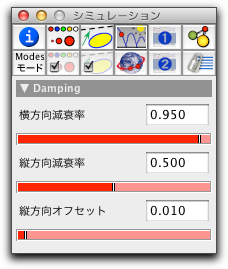

床

 |
| 重力のもとで床に当たるボール |
床と 反射壁は非常によく似ています。反射壁は、床の一部のようなものです。
床のインスペクタ
床のインスペクタは、調整可能な3つの要素を持ちます。:
 |
| 床のインスペクタ |
減衰率 は、0.0 と 1.0 の間の数値をとる減衰係数です。2つの数 dx = 1 – 横方向減衰率 と dy = 1 – 縦方向減衰率 は、粒子が床に当たるたびに、速度の x- 成分と y-成分に掛けられる係数になります。したがって、両方のスライダーが0に設定されるならば、点は完全に跳ね返り、両方のスライダーが1に設定されるならば、点は床に当たった瞬間に停止します。
床と CindyScript
CindyLab の他の要素のように、床には CindyScript によって読み書きのできるいくつかの要素があります。次のリストはアクセス可能な床の要素です。:
- xdamp: 横方向減衰率 (実数, 読み書き可)
- ydamp: 縦方向減衰率 (実数, 読み書き可)
- simulate: 床のシミュレーションのON/OFF (ブール値, 読み書き可)
次もご覧ください
Page last modified on Tuesday 13 of March, 2012 [13:45:52 UTC].
The original document is available at
http://doc.cinderella.de/tiki-index.php?page=FloorJ